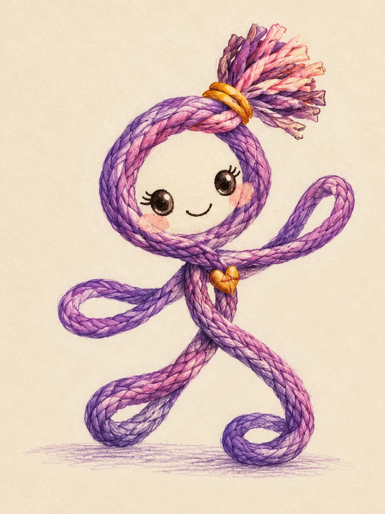

Violeta, rosa suave, dorado y crema.
La viajera curiosa
Luna
- En el cuento
- Protagonista y enlace entre las seis paradas. Aprende observando y vuelve a casa para crear su primera historia textil.
- Personalidad
- Curiosa, afectuosa y perseverante. Pregunta antes de dar algo por sabido.
- Materiales representados
- Cordones de trapillo de algodón reciclado representados en el diseño original. La ilustración no acredita la composición de un muñeco físico.
- Rasgos visuales
- Cabeza circular de cordón, rostro crema, ojos bordados oscuros, mejillas rosas, coleta de flecos y corazón dorado en el pecho.
- Detalles y accesorios
- Coleta de trapillo, pequeño corazón y hilo que enlaza su viaje.
- Gestos y expresiones
- Saluda con un brazo en lazo y avanza con pasos flexibles. En las láminas originales aparecen alegría, asombro y serenidad.
- Qué nos ayuda a descubrir
- Fibra, hilo y tejido: descubrir cómo se relacionan.
- Muestra real para acompañar
- Una tira de algodón o un ovillo con composición identificada. No afirmar que es reciclado sin comprobarlo.
- Pregunta para conversar
- ¿Qué historia te gustaría llevar en un hilo?
- Propuesta de actividad
- Elegir dos colores y repetirlos en una fila; contar a qué recuerdo se parecen.
- Contexto y autenticidad
- Personaje de ficción; no representa una cultura concreta.